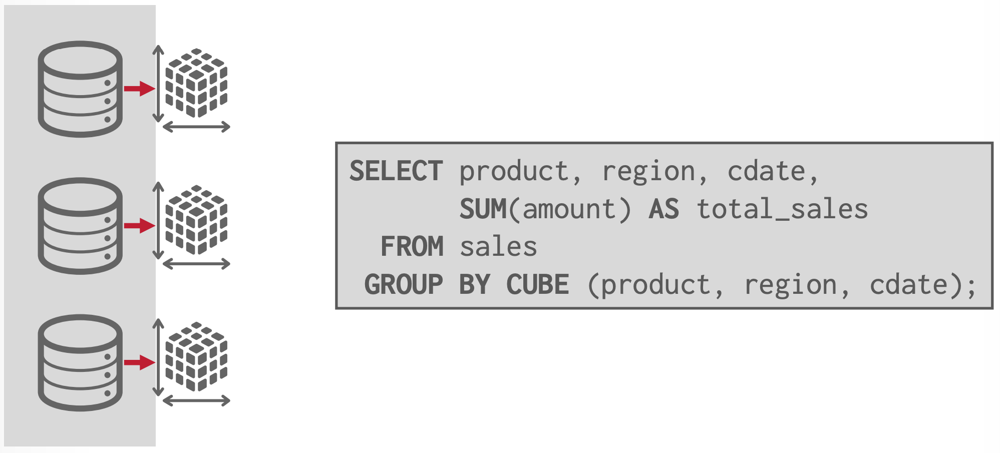
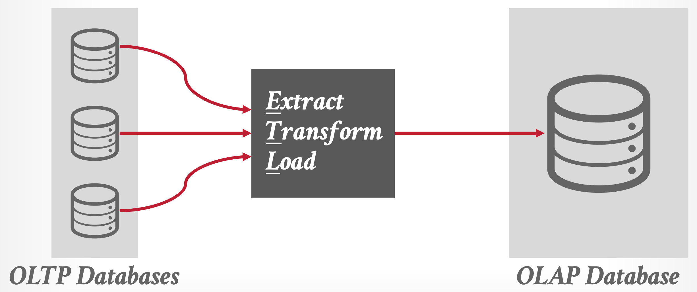
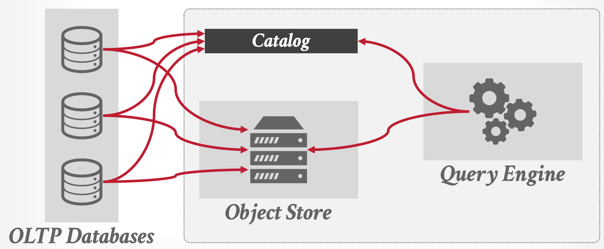
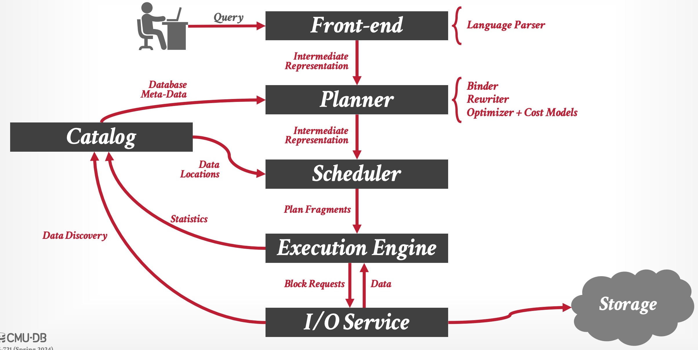

CMU CS DB Andy Pavlo 교수님의 "Advanced Database Systems" 강의를 필기한 내용입니다.
본 글의 그림들은 별도의 명시가 없는 한 해당 강의 자료에서 가져왔습니다.
다소 잘못된 내용과 구어적 표현 이 포함되어 있을 수 있습니다.
#draft Overview 이기에 내용이 다소 추상적입니당 (나중에 좀 더 명확해지면 설명 추가)
OLTP, OLAP, ETL 1 2 3
- On-Line Transaction Processing (OLTP) 은 실시간으로 DBMS 의 트랜젝션을 처리하는 시스템을 일컫는다.
- 즉, 최대한 빠르게 데이터를 DBMS 에 주입하고 꺼낼 수 있게 해주는 시스템인 것.
- On-Line Analytical Processing (OLAP) 은 실시간으로 DBMS 에 담긴 데이터를 분석해주는 시스템을 일컫는다.
- 단순히 데이터를 받아오는 것이 아니라,
- OLTP 에 쌓인 데이터를 분석하여 나온 새로운 데이터를 사용자에게 제공하는 시스템인 것.
- Extract, Transform, Load (ETL) 은 이 OLTP 에 쌓인 데이터를 분석에 사용하기 용이한 형태로 바꿔서 OLAP 에 넣어주는 변환 시스템을 일컫는다.
- 이 ETL 은 그냥 단순히 데이터를 바꾸는 것 뿐 아니라, 중복된 데이터를 합치는 등의 작업도 한다고 한다.
Background 3
- 문제의 시작은 기존의 Monolithic, Row-store DBMS 이다.
- 너가 아는 대부분의 DBMS 들이 다 이런 방식이다.
- Monolithic - 하나의 binary 를 이용해 모든 데이터들을 저장하고 질의할 수 있고
- Row-store - 모든 데이터들이 table 에 row (tuple) 로서 저장되는
- 근데 문제는 이게 analytics 관점에서 별로라는 것이다.
- 가령 IoT 시스템에서 특정 센서값의 변화 추이를 보고 싶다고 해보자.
- 그럼 해당 테이블에서 모든 row 에 대한 page 들을 전부 꺼낸 다음에
- 해당 센서값에 해당하는 domain 들을 전부 추려서
- 그것으로 분석을 해야 한다.
- 근데 보다시피, 모든 page 들이 다 들춰지기 때문에 실제로 사용되지 않는 데이터들에 대한 IO 가 발생하고, 이것이 비효율성을 낳는다는 것.
- 그래서 이 문제를 해결하기 위한 방법들이 나오게 되는데…
1990s - Data Cubes 4

- Data Cube 라는 것은 한줄로 요약하면 Pre-computed aggregation 이다.
- 기존의 RDBMS 에서
AVG와 같은 aggregation 기억나제? - 이런 것들을 미리 다 계산해 놓은 다음에 저장해 놨다가
- 이것에 대한 질의가 들어오면 얘네들만 꺼내서 반환하는 것.
- 기존의 RDBMS 에서
- 이것은 DBA 가 어떤 것을 cube 로 만들지 지정해 놓으면, (가령 매일 밤에 cron job 을 돌리는 것과 같은) 특정 때에 얘네들이 계산되어 저장되고, 이에 대한 query 가 들어오면 계산해 놓은 cube 들을 이용해 응답하는 방식으로 이루어진다.
2000s - Data Warehouse 5

- 얘네들은 기존의 Monolithic DBMS 를 analytic-friendly 하게 수정한 것들을 일컫는다.
- 대부분의 시스템들이 PostgreSQL 를 기반으로 하고 있다고 한다.
- 가령 PostgreSQL 을 fork 해서 만든 monetDB 는 추후에 DuckDB 가 된다.
- 이게 DuckDB 가 PostgreSQL 과 유사한 인터페이스를 가지고 있는 이유이다.
- 얘네들의 특징은
- Column-store: 기존의 DBMS 에서 row-store 와 관련된 부분을 걷어내고 이것들을 column-store 로 바꿔서 저런 analytical workload 에 잘 대응할 수 있도록 했다고 한다.
- 그리고 대부분의 경우 특정 솔루션 혹은 벤더사에서만 사용할 수 있는 proprietary data format (encoding) 을 사용한다고 한다.
- 그래서 위와 같은 ETL 이 도입되고
- 효과적인 ETL 을 위해, 그리고 Data Warehouse 시스템이 모든 데이터들에 대해 주도권을 갖고 있게 하기 위해 OLTP 에 데이터가 주입되기 전에 Schema 가 다 저장되어야 한다고 한다.
- Shared-nothing architecture: 데이터를 분산 저장할 때, 각 노드들이 겹치는 부분 없이 전체 데이터의 일정 부분을 갖고 있게끔 설계한다고 한다.
- 어쨋든 이 구조때문에 용량을 늘리려면 새로운 node 를 추가해야만 하고,
- 이것이 이 시스템의 한계점으로 꼽힌다고 한다.
- Column-store: 기존의 DBMS 에서 row-store 와 관련된 부분을 걷어내고 이것들을 column-store 로 바꿔서 저런 analytical workload 에 잘 대응할 수 있도록 했다고 한다.
2010s - Shared-disk Engine 6

- 이전에는 DBMS 내에서 storage management 까지 전부 담당했다면,
- 이때부터는 (AWS S3 와 같은) 외부 스토리지에 데이터를 저장하고 DBMS 에서는 “연산” 에만 집중하게끔 트렌드가 바뀐다.
- DBMS 에서 storage 를 관리하는 부담 (뭐 개발, 유지보수에의 영향 뿐 아니라 DBMS 가 소모하는 CPU 등의 자원 등의 측면에서도) 을 줄일 수 있었다.
- 이 방식의 초기에는 data injection 을 위해서는 DBMS 를 거쳐야만 하고, 따라서 특정 format 으로 데이터가 저장되는 제약조건이 걸리게 된다.
- 하지만 나중에는 이러한 제약조건을 허물어,
- (1) DBMS 를 거치지 않고 바로 외부 스토리지에 데이터를 집어넣을 수 있게 하고
- (2) 특정 data format 을 강제하는 방식이 아닌 먼저 데이터를 집어넣은 다음, 어느 위치에 어느 형태로 데이터가 저장되어있는지 알려주는 방식으로 변경된다.
- 이놈이 Catalog 이다; 사용자는 Catalog 에다가 데이터가 저장된 위치와 어떻게 읽어야 하는지를 알려 OLAP 에서 사용할 수 있게 한다.
- 다만 그렇다고 format 이 아예 없는 것은 아닌듯; Apache Parquet 와 같은 형식을 사용하긴 하지만 특정 DBMS 에 종속되어 있지는 않다는 의미로 받아들이면 된다.
2020s - Data Lakehouse 6
- Data Lakehouse 는 기존의 시스템에서 더 나은 schema control 과 versioning 을 제공하는 것이라고 한다.
- 여기서는 row-data 를 log structure 로 저장하고, 추후에 이것을 column-data 로 변환하며 stale data 를 정리하는 compaction 을 거친다고 한다.
- 이 Lakehouse system 이 나오게 된 배경은 다음과 같다:
- AI/ML 이 점점 더 중요해짐에 따라, SQL (+ 혹은 OLAP query) 가 아닌 방식으로 데이터를 조회하는 것에 대한 요구가 점점 증가했다.
- 뭐 이런 AI/ML workload 에서는 data access pattern 이 기존의 SQL 을 사용할 때와 특성이 좀 다르다고 이해하면 된다.
- 가령 Pytorch 나 Tensorflow 에서는 SQL 로 데이터를 받아오도록 하는 것이 별로 좋지 않은 갑다.
- SQL 에서는 데이터를 가져와 어느정도 가공해서 응답하는데 AI/ML 에서는 그렇지 않다?
- 뭐 이런 AI/ML workload 에서는 data access pattern 이 기존의 SQL 을 사용할 때와 특성이 좀 다르다고 이해하면 된다.
- 그리고 외부 스토리지를 사용함에 따라 DBMS 를 통해서만 데이터를 접근하지 않아도 되었다.
- 누구나 parquet 와 같은 형식으로 데이터를 그냥 외부 스토리지에 투척할 수 있었고, 해당 데이터가 어디에 있는지만 catalog 에 알려주면 되었다.
- 근래의 많은 데이터들이 unstructured (이미지, 비디오 등) 혹은 semi-structured (XML, JSON 등) 형식을 가진다.
- 즉, SQL 와 같은 structured data 에 대한 수요가 줄었다는 것.
- AI/ML 이 점점 더 중요해짐에 따라, SQL (+ 혹은 OLAP query) 가 아닌 방식으로 데이터를 조회하는 것에 대한 요구가 점점 증가했다.
OLAP DBMS Component
- 근래에 나온 또 다른 트렌드는 이전의 monolithic 한 접근과 다르게 DBMS 들의 각 component 들이 분리되어 독자적으로 개발되어 라이브러리나 서비스의 형태로 배포되고 있다는 점이다.
- 가령, OLAP DBMS 의 다음과 같은 component 들이 개별 배포되고 있다고 한다.
- System Catalogs
- Intermediate Representation (IR)
- 얘는 PL 에서 배운 그 중간 언어이다.
- JVM 에서처럼, SQL 은 IR 로 변환되어 처리된다.
- Query Optimizers
- File Format, Access Libraries
- 아마 여기에 Apache Parquet 가 포함되겠지?
- Execution Engines, Fabrics
- 이런 component project 들은 각자의 API 를 제공하기 때문에, 공개된 component 들만을 조합해서 새로운 OLAP DBMS 를 만드는 것이 가능하다.
- 다만, 중간에 추상화 (API) 가 많이 끼게 되면 그만큼 비효율적으로 작동하기 때문에, 기존의 프로젝트를 재활용하는 것과 성능 간에 밸런스를 맞춰야 한다.
- 이것과 관련된 논문이 있다고 한다. (여기)
Architecture Overview

- 사용자가 query 를 보내면 내부적으로는 위와 같은 일이 벌어진다. 하나하나 살펴보자.
- Front-end: 얘는 그냥 parser 라고 생각하면 된다. 입력 query (SQL) 를 파싱하여, token 단위 등으로 나눠 IR 로 변환한다.
- Planner: 얘는 입력받은 IR 를 이용해 (1) 처리가 가능한지 파악하고 (2) 어떻게 처리하는게 효율적인지 파악해서 그 결과로 쿼리를 처리할 계획을 세우는 놈이다.
- 대략 다음과 같은 기능으로 세분화할 수 있다.
- Binder: Token 이 어떤 놈인지 파악한다.
- 가령 이 token 이 실제로 존재하는 table 이름인가 등을 파악하고, 이때 Catalog 의 도움을 받는다.
- Rewriter: 쿼리 IR 을 좀 더 처리하기 쉬운 형태로 재작성한다.
- Optimizer: 각 연산의 비용 모델 (Cost Model) 에 따라 연산을 최적화한다.
- Binder: Token 이 어떤 놈인지 파악한다.
- 대략 다음과 같은 기능으로 세분화할 수 있다.
- Catalog: 얘는 DB 의 metadata 를 관리하는 역할을 한다.
- 위의 Binder 에서 사용되는 것 처럼, 이 component 는 여러 부분에서 호출되어 사용된다.
- Scheduler: Planner 가 세운 처리 계획을 이용해, “물리적인” 처리 계획을 세운다.
- Planner 가 logical layer 에서의 처리 계획이었다면, Scheduler 는 physical layer 에서의 처리 계획이라고 생각하면 된다.
- 이를 위해 Scheduler 는 Catalog 를 이용해 데이터가 어느 위치에 있는지, 만일 분산 저장되어 있으면 어떤 node 에 저장되어 있는지 등을 파악한다.
- Execution Engine: 얘는 Scheduler 의 처리 계획을 부분적으로 수행하는 놈이라고 생각하면 된다.
- 우선 Scheduler 가 각 처리 계획을 쪼개어 Execution Engine 에게 분배하면
- Execution Engine 계획을 이행하기 위해 필요한 데이터를 하위 layer 인 IO Service 에게 block request 를 보내어 받아오게 되고
- 받아온 뒤 여러 연산을 하여 처리한 뒤, 상위 layer (Scheduler) 로 보내 사용자에게 처리 결과를 알려주게 된다.
- 이와 동시에 Execution Engine 은 Catalog 에 metadata update 를 해준다.
- 이는 Execution Engine 이 처리한 결과에 따라 metadata 가 변경되었을 수도 있기에, 그것을 Catalog 에 알려 반영될 수 있게 하는 것이라 생각하면 된다.
- IO Service: 얘는 Execution Engine 으로부터 block request 를 받아 해당 데이터를 반환하는 역할이다
- Block layer 인 셈.
- 이를 위해 local 의 disk 에 접근하거나 외부 스토리지에 접근하는 등의 작업을 한다.
- Execution Engine 과 유사하게, IO Service 도 Catalog 와 소통하여 데이터의 물리적인 위치를 알려준다.
- 이는 Catalog 는 storage 에 어떻게 데이터가 저장되어 있는지 정보를 갖고 있긴 하지만, 그것을 실제로 확인하지는 않기 때문이다.
- 만일 확인하는 기능이 Catalog 에도 포함된다면, 중복된 코드가 포함되기 때문.
Distributed Query Execution
- 거의 대부분의 상용 OLAP DBMS 들은 distributed system 이지만, OLAP query 를 처리하는 과정은 single node system 과 동일하기에, 대부분의 연구는 single node system 을 기반으로 이루어 진다.
- 여러 node 간의 orchestration 은 여러 cpu 간의 orchestration (가령 NUMA 등) 와 동일하게 생각할 수 있기 때문이라고 하는데, 맞는 설명인지는 잘 모르겠다.
- 어쨋든 query plan 은 이상적으로는 physical operator 들의 DAG (Directed Acyclic Graph) 으로서 표현될 수 있다.
- “이상적으로는” 이라는 말은 실제 구현에서는 그렇지 않다는 말이다. PostgreSQL 을 포함한 많은 DBMS 는 query plan 을 tree 형태로 구현하고 있다고 한다.
- 이는 (하나의 예시인지는 모르겠지만) subquery 때문이라고 한다. subquery 의 결과를 다른 여러 plan node 에서 사용해야 하기 때문?
- DAG 와 tree 의 가장 큰 차이점은 input 이 한개냐 여러개냐의 차이이기 때문에, 아마 query plan 들의 각 physical operator 들은 하나의 input source 만을 가지게 되지 않을까
- 그리고 DBMS 는 각 physical operator 에 대해 어디에서 input 이 와서 어디로 output 이 가는지를 고려한다고 한다.